Free VPN server on GCP in 5 minutes
As you might know, there are a lot of blocked services in Russia, LinkedIn, Telegram, etc., and lately, I start to use LinkedIn more extensively. I tried to use some free VPN services, like FlyVPN, Tunnel Bear, but they all have restrictions and slow. That’s why I decided to run my own VPN server on some cloud platform. I know that you can run droplet in the digital ocean for only 5$ a month
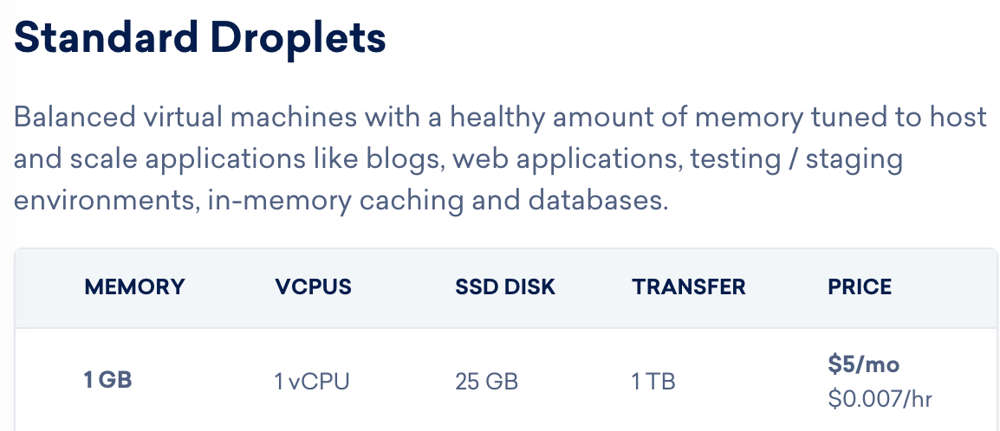,
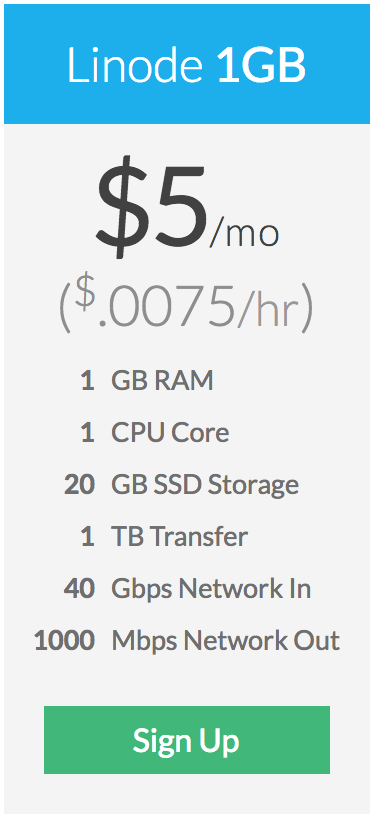
First, we create new micro instance in one of the us-east1, us-west1, and us-central1 regions.
I’m using image Ubuntu 17.10, we don’t need any SSD, just persistent 10Gb disk,
we need to allow HTTP and HTTPS traffic, our VPN server will be available over HTTPs
and we need HTTP for LetsEncrypt verification.
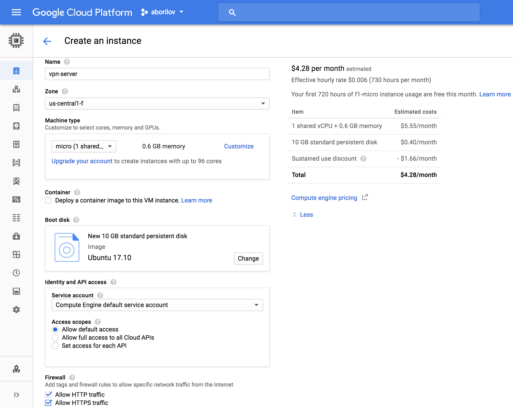
VPC network->Firewall rules we need to add port for our VPN server, I’m using port 18450 you can use another.
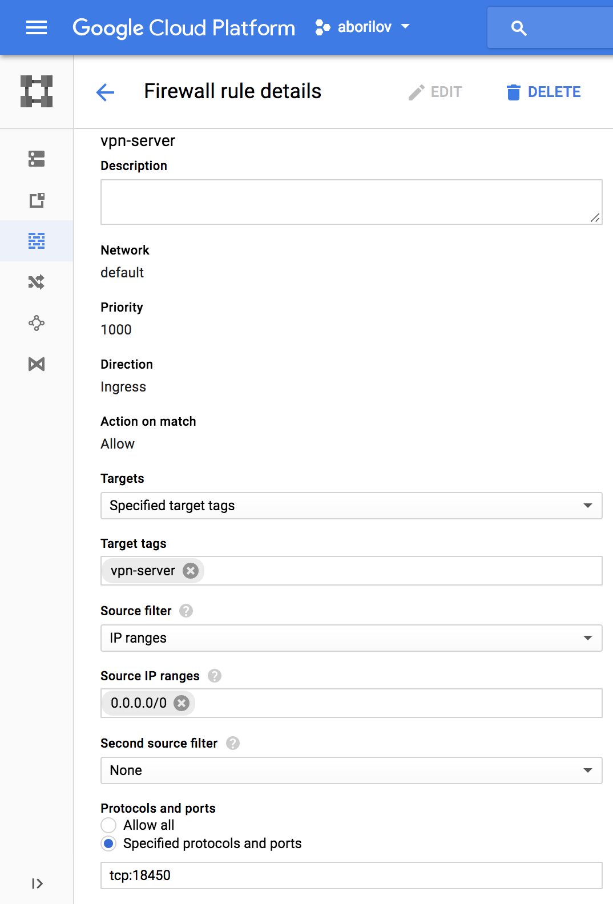
Edit:
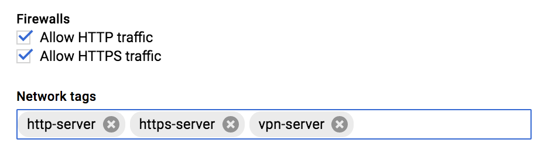
Network interfaces
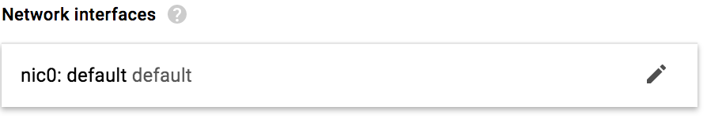
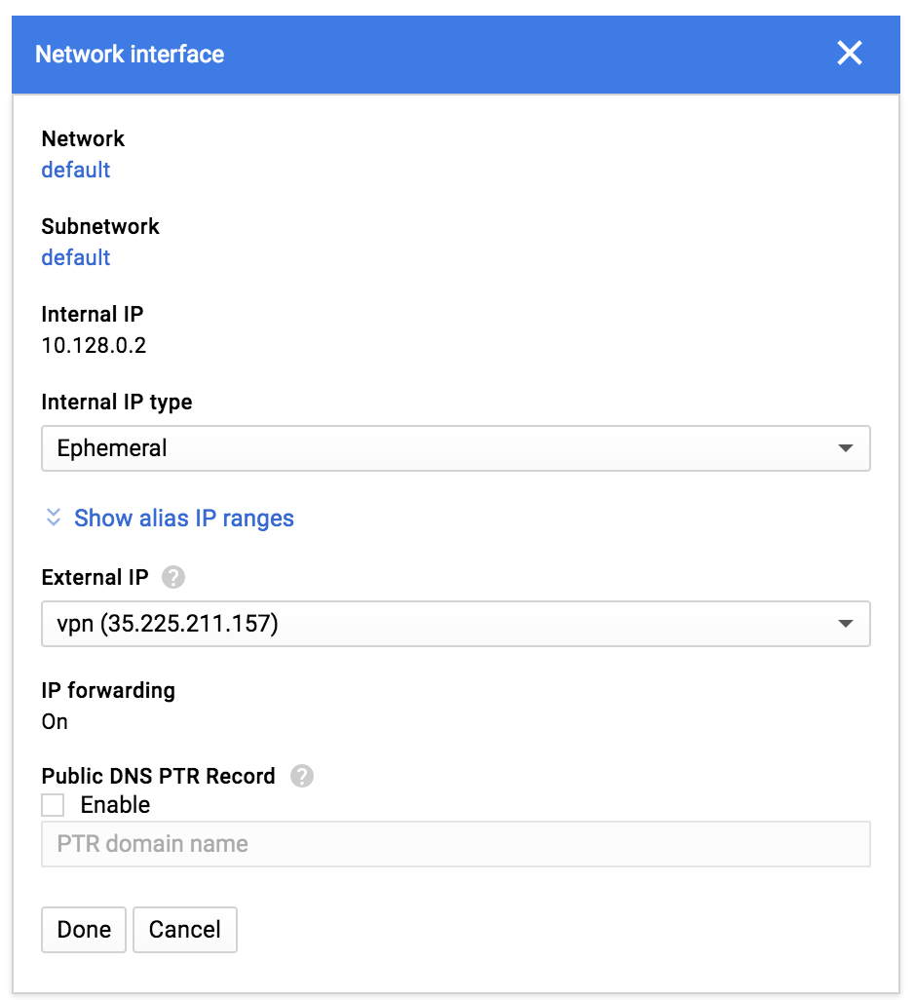
If you like me and all your DNS record already in Cloud DNS you can add new DNS record for this IP under Network services->Cloud DNS:
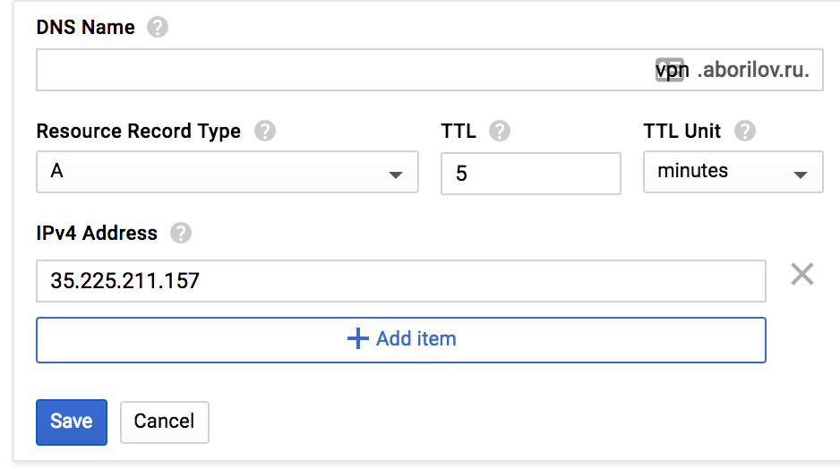
OK, our instance is ready, now we need to install VPN server. Connect to the instance through SSH web-based client:
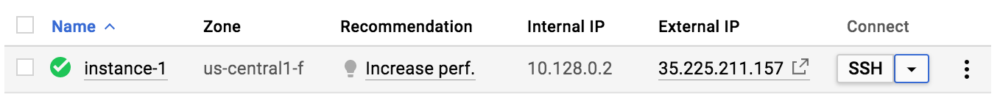
We will be using PRITUNL because it has excellent webUI. Official instruction can be found here, but it’s very simple, so I’ll show all steps here:
just run following command
sudo tee -a /etc/apt/sources.list.d/pritunl.list << EOF
deb http://repo.pritunl.com/stable/apt artful main
EOF
sudo apt-key adv --keyserver hkp://keyserver.ubuntu.com --recv 7568D9BB55FF9E5287D586017AE645C0CF8E292A
sudo apt-get update
sudo apt-get --assume-yes install pritunl mongodb-server
sudo systemctl start pritunl mongodb
sudo systemctl enable pritunl mongodbThat’s all, now you can go to https://vpn.youdomains.com
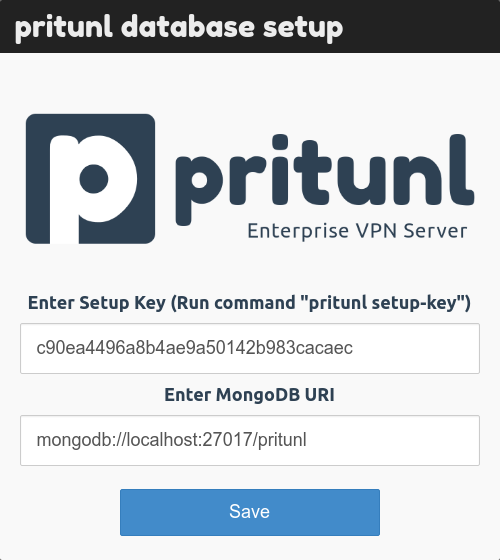
pritunl setup-key this will return the setup key.
By default, the MongoDB uri will be filled with the uri for the localhost MongoDB server.
This should be left as it is when the MongoDB server is running on the same server as the Pritunl instance.
After that, you already can login with username and password - pritunl
Next, on the Initial Setup screen, you need to set Username, New Password,
Public Address and set LetsEncrypt Domain to your newly created domain name.
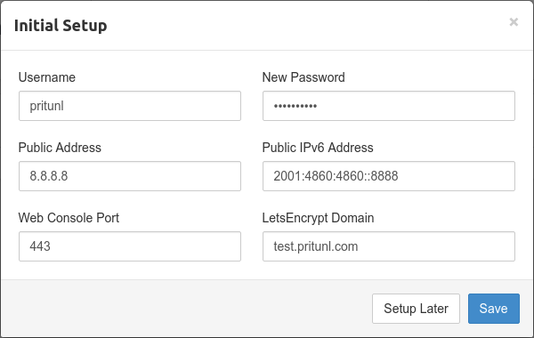
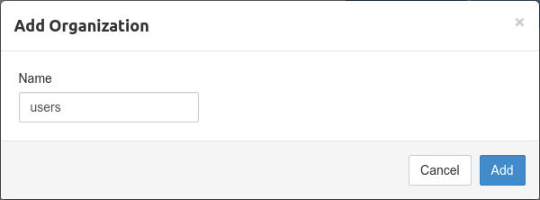
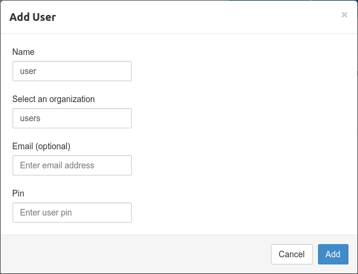
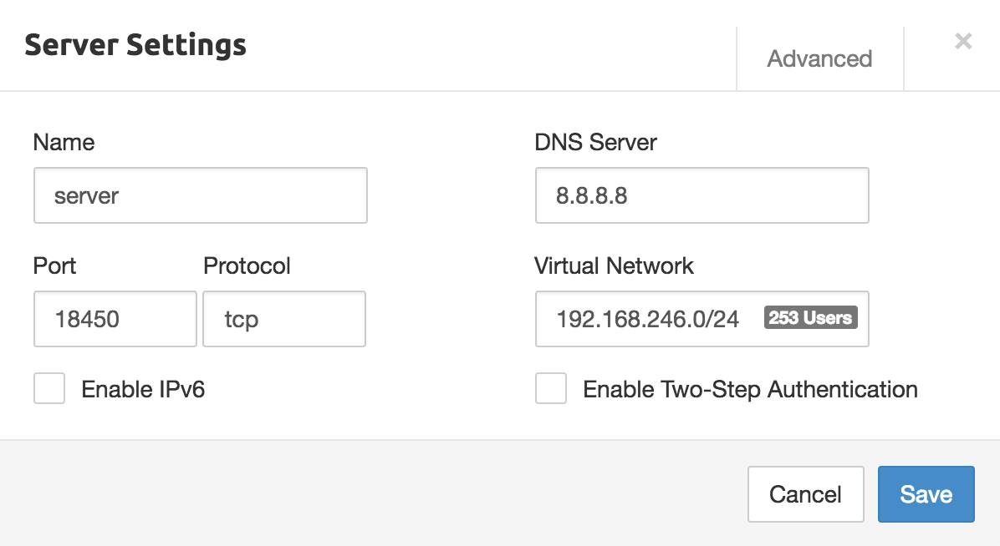
Firewall rule
attach server to the organization
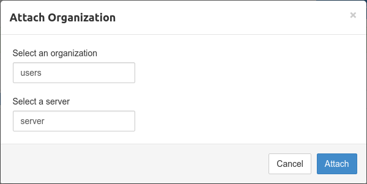
After the server has been created the user profile can be downloaded on the
Users page by clicking the download button or profile links button on the right side of a user.
The profile can then be imported into the Pritunl client or any other OpenVPN client.
That’s all, your VPN server is ready.
I use pritunl client on macos and openvpn on android and on iOS